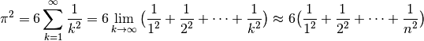

프로파일링¶
This part describes the profiling abilities of Cython. If you are familiar with profiling pure Python code, you can only read the first section (Cython Profiling Basics). If you are not familiar with Python profiling you should also read the tutorial (Profiling Tutorial) which takes you through a complete example step by step.
Cython Profiling Basics¶
Profiling in Cython is controlled by a compiler directive. It can be set either for an entire file or on a per function basis via a Cython decorator.
Enabling profiling for a complete source file¶
Profiling is enabled for a complete source file via a global directive to the Cython compiler at the top of a file:
# cython: profile=True
Note that profiling gives a slight overhead to each function call therefore making your program a little slower (or a lot, if you call some small functions very often).
Once enabled, your Cython code will behave just like Python code when called from the cProfile module. This means you can just profile your Cython code together with your Python code using the same tools as for Python code alone.
Disabling profiling function wise¶
If your profiling is messed up because of the call overhead to some small functions that you rather do not want to see in your profile - either because you plan to inline them anyway or because you are sure that you can’t make them any faster - you can use a special decorator to disable profiling for one function only:
cimport cython
@cython.profile(False)
def my_often_called_function():
pass
Enabling line tracing¶
To get more detailed trace information (for tools that can make use of it), you can enable line tracing:
# cython: linetrace=True
This will also enable profiling support, so the above profile=True option
is not needed. Line tracing is needed for coverage analysis, for example.
Note that even if line tracing is enabled via the compiler directive, it is
not used by default. As the runtime slowdown can be substantial, it must
additionally be compiled in by the C compiler by setting the C macro definition
CYTHON_TRACE=1. To include nogil functions in the trace, set
CYTHON_TRACE_NOGIL=1 (which implies CYTHON_TRACE=1). C macros can be
defined either in the extension definition of the setup.py script or by
setting the respective distutils options in the source file with the following
file header comment (if cythonize() is used for compilation):
# distutils: define_macros=CYTHON_TRACE_NOGIL=1
Enabling coverage analysis¶
Since Cython 0.23, line tracing (see above) also enables support for coverage
reporting with the coverage.py tool.
To make the coverage analysis understand Cython modules, you also need to enable
Cython’s coverage plugin in your .coveragerc file as follows:
[run]
plugins = Cython.Coverage
With this plugin, your Cython source files should show up normally in the coverage reports.
To include the coverage report in the Cython annotated HTML file, you need
to first run the coverage.py tool to generate an XML result file. Pass
this file into the cython command as follows:
$ cython --annotate-coverage coverage.xml package/mymodule.pyx
This will recompile the Cython module and generate one HTML output file next to each Cython source file it processes, containing colour markers for lines that were contained in the coverage report.
Profiling Tutorial¶
This will be a complete tutorial, start to finish, of profiling Python code, turning it into Cython code and keep profiling until it is fast enough.
As a toy example, we would like to evaluate the summation of the reciprocals of
squares up to a certain integer  for evaluating
for evaluating  . The
relation we want to use has been proven by Euler in 1735 and is known as the
Basel problem.
. The
relation we want to use has been proven by Euler in 1735 and is known as the
Basel problem.

A simple Python code for evaluating the truncated sum looks like this:
#!/usr/bin/env python
# encoding: utf-8
# filename: calc_pi.py
def recip_square(i):
return 1./i**2
def approx_pi(n=10000000):
val = 0.
for k in range(1,n+1):
val += recip_square(k)
return (6 * val)**.5
On my box, this needs approximately 4 seconds to run the function with the
default n. The higher we choose n, the better will be the approximation for
. An experienced Python programmer will already see plenty of
places to optimize this code. But remember the golden rule of optimization:
Never optimize without having profiled. Let me repeat this: Never optimize
without having profiled your code. Your thoughts about which part of your
code takes too much time are wrong. At least, mine are always wrong. So let’s
write a short script to profile our code:
#!/usr/bin/env python
# encoding: utf-8
# filename: profile.py
import pstats, cProfile
import calc_pi
cProfile.runctx("calc_pi.approx_pi()", globals(), locals(), "Profile.prof")
s = pstats.Stats("Profile.prof")
s.strip_dirs().sort_stats("time").print_stats()
Running this on my box gives the following output:
Sat Nov 7 17:40:54 2009 Profile.prof
10000004 function calls in 6.211 CPU seconds
Ordered by: internal time
ncalls tottime percall cumtime percall filename:lineno(function)
1 3.243 3.243 6.211 6.211 calc_pi.py:7(approx_pi)
10000000 2.526 0.000 2.526 0.000 calc_pi.py:4(recip_square)
1 0.442 0.442 0.442 0.442 {range}
1 0.000 0.000 6.211 6.211 <string>:1(<module>)
1 0.000 0.000 0.000 0.000 {method 'disable' of '_lsprof.Profiler' objects}
This contains the information that the code runs in 6.2 CPU seconds. Note that the code got slower by 2 seconds because it ran inside the cProfile module. The table contains the real valuable information. You might want to check the Python profiling documentation for the nitty gritty details. The most important columns here are totime (total time spent in this function not counting functions that were called by this function) and cumtime (total time spent in this function also counting the functions called by this function). Looking at the tottime column, we see that approximately half the time is spent in approx_pi and the other half is spent in recip_square. Also half a second is spent in range … of course we should have used xrange for such a big iteration. And in fact, just changing range to xrange makes the code run in 5.8 seconds.
We could optimize a lot in the pure Python version, but since we are interested in Cython, let’s move forward and bring this module to Cython. We would do this anyway at some time to get the loop run faster. Here is our first Cython version:
# encoding: utf-8
# cython: profile=True
# filename: calc_pi.pyx
def recip_square(int i):
return 1./i**2
def approx_pi(int n=10000000):
cdef double val = 0.
cdef int k
for k in xrange(1,n+1):
val += recip_square(k)
return (6 * val)**.5
Note the second line: We have to tell Cython that profiling should be enabled. This makes the Cython code slightly slower, but without this we would not get meaningful output from the cProfile module. The rest of the code is mostly unchanged, I only typed some variables which will likely speed things up a bit.
We also need to modify our profiling script to import the Cython module directly. Here is the complete version adding the import of the pyximport module:
#!/usr/bin/env python
# encoding: utf-8
# filename: profile.py
import pstats, cProfile
import pyximport
pyximport.install()
import calc_pi
cProfile.runctx("calc_pi.approx_pi()", globals(), locals(), "Profile.prof")
s = pstats.Stats("Profile.prof")
s.strip_dirs().sort_stats("time").print_stats()
We only added two lines, the rest stays completely the same. Alternatively, we could also manually compile our code into an extension; we wouldn’t need to change the profile script then at all. The script now outputs the following:
Sat Nov 7 18:02:33 2009 Profile.prof
10000004 function calls in 4.406 CPU seconds
Ordered by: internal time
ncalls tottime percall cumtime percall filename:lineno(function)
1 3.305 3.305 4.406 4.406 calc_pi.pyx:7(approx_pi)
10000000 1.101 0.000 1.101 0.000 calc_pi.pyx:4(recip_square)
1 0.000 0.000 4.406 4.406 {calc_pi.approx_pi}
1 0.000 0.000 4.406 4.406 <string>:1(<module>)
1 0.000 0.000 0.000 0.000 {method 'disable' of '_lsprof.Profiler' objects}
We gained 1.8 seconds. Not too shabby. Comparing the output to the previous, we see that recip_square function got faster while the approx_pi function has not changed a lot. Let’s concentrate on the recip_square function a bit more. First note, that this function is not to be called from code outside of our module; so it would be wise to turn it into a cdef to reduce call overhead. We should also get rid of the power operator: it is turned into a pow(i,2) function call by Cython, but we could instead just write i*i which could be faster. The whole function is also a good candidate for inlining. Let’s look at the necessary changes for these ideas:
# encoding: utf-8
# cython: profile=True
# filename: calc_pi.pyx
cdef inline double recip_square(int i):
return 1./(i*i)
def approx_pi(int n=10000000):
cdef double val = 0.
cdef int k
for k in xrange(1,n+1):
val += recip_square(k)
return (6 * val)**.5
Now running the profile script yields:
Sat Nov 7 18:10:11 2009 Profile.prof
10000004 function calls in 2.622 CPU seconds
Ordered by: internal time
ncalls tottime percall cumtime percall filename:lineno(function)
1 1.782 1.782 2.622 2.622 calc_pi.pyx:7(approx_pi)
10000000 0.840 0.000 0.840 0.000 calc_pi.pyx:4(recip_square)
1 0.000 0.000 2.622 2.622 {calc_pi.approx_pi}
1 0.000 0.000 2.622 2.622 <string>:1(<module>)
1 0.000 0.000 0.000 0.000 {method 'disable' of '_lsprof.Profiler' objects}
That bought us another 1.8 seconds. Not the dramatic change we could have expected. And why is recip_square still in this table; it is supposed to be inlined, isn’t it? The reason for this is that Cython still generates profiling code even if the function call is eliminated. Let’s tell it to not profile recip_square any more; we couldn’t get the function to be much faster anyway:
# encoding: utf-8
# cython: profile=True
# filename: calc_pi.pyx
cimport cython
@cython.profile(False)
cdef inline double recip_square(int i):
return 1./(i*i)
def approx_pi(int n=10000000):
cdef double val = 0.
cdef int k
for k in xrange(1,n+1):
val += recip_square(k)
return (6 * val)**.5
Running this shows an interesting result:
Sat Nov 7 18:15:02 2009 Profile.prof
4 function calls in 0.089 CPU seconds
Ordered by: internal time
ncalls tottime percall cumtime percall filename:lineno(function)
1 0.089 0.089 0.089 0.089 calc_pi.pyx:10(approx_pi)
1 0.000 0.000 0.089 0.089 {calc_pi.approx_pi}
1 0.000 0.000 0.089 0.089 <string>:1(<module>)
1 0.000 0.000 0.000 0.000 {method 'disable' of '_lsprof.Profiler' objects}
First note the tremendous speed gain: this version only takes 1/50 of the time of our first Cython version. Also note that recip_square has vanished from the table like we wanted. But the most peculiar and import change is that approx_pi also got much faster. This is a problem with all profiling: calling a function in a profile run adds a certain overhead to the function call. This overhead is not added to the time spent in the called function, but to the time spent in the calling function. In this example, approx_pi didn’t need 2.622 seconds in the last run; but it called recip_square 10000000 times, each time taking a little to set up profiling for it. This adds up to the massive time loss of around 2.6 seconds. Having disabled profiling for the often called function now reveals realistic timings for approx_pi; we could continue optimizing it now if needed.
This concludes this profiling tutorial. There is still some room for improvement in this code. We could try to replace the power operator in approx_pi with a call to sqrt from the C stdlib; but this is not necessarily faster than calling pow(x,0.5).
Even so, the result we achieved here is quite satisfactory: we came up with a solution that is much faster then our original Python version while retaining functionality and readability.